Enhanced Visualization
Yichao Hua
2025-05-16
Visualization.RmdCreate an Enhanced Dimensional Reduction Plot
Introduction
In Seurat, dimension reduction plots such as UMAP are typically
created using DimPlot for discrete variables and
FeaturePlot for continuous variables.
SeuratExtend simplifies this process with
DimPlot2, which automatically handles both types of
variables without requiring different functions. The function retains
most of the usage conventions of both DimPlot and
FeaturePlot while introducing numerous additional
parameters for enhanced customization.
Basic Usage
To generate a basic dimension reduction plot, simply call
DimPlot2 with your Seurat object:
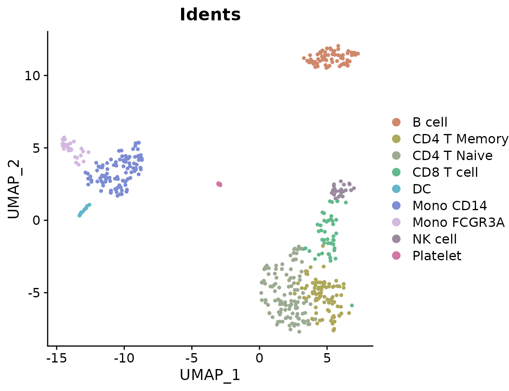
Visualizing Different Variables
DimPlot2 can handle both discrete and continuous
variables seamlessly. Here’s how to input different variables into the
plot:
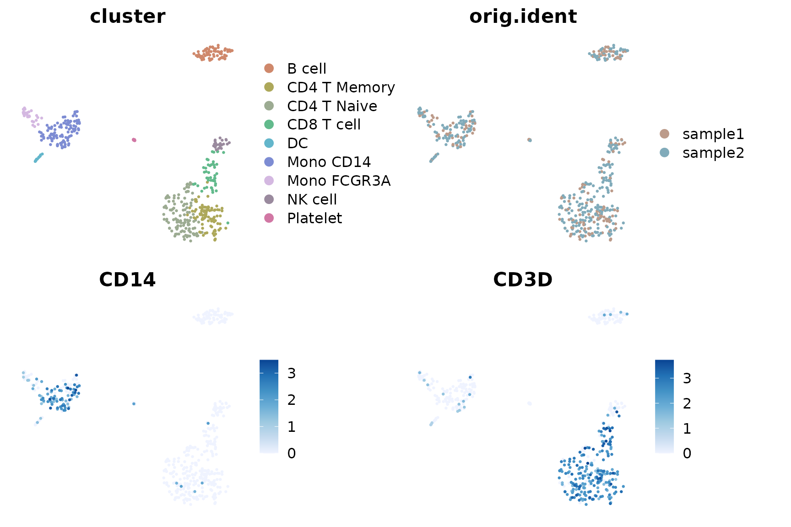
Note: Starting from v1.1.0, the default color scheme
for continuous variables has changed from viridis “A” to RColorBrewer
“Blues”. This change was made because the previous viridis-A series used
black for low expression and red-yellow for high expression, which could
be visually problematic - black tends to be too eye-catching while
yellow can be hard to see against a white background. The new default
uses light blue for low expression and deep blue for high expression,
providing better visual clarity. If you prefer the previous color
scheme, simply set cols = "A" in your function call.

Splitting by Variable
You can split the visualization by a specific variable, which is particularly useful for comparative analysis across conditions or identities:

Highlighting Specific Cells
To highlight cells of interest, such as a specific cluster, you can define the cells explicitly and use them in your plot:
Advanced Customization
For each variable, you can specify custom colors and adjust themes. For detailed information on color customization, refer to the Explore Color Functions section:
DimPlot2(
pbmc,
features = c("cluster", "orig.ident", "CD14", "CD3D"),
cols = list(
"cluster" = "default", # dark theme
"CD14" = "D",
"CD3D" = "OrRd"
),
theme = NoAxes())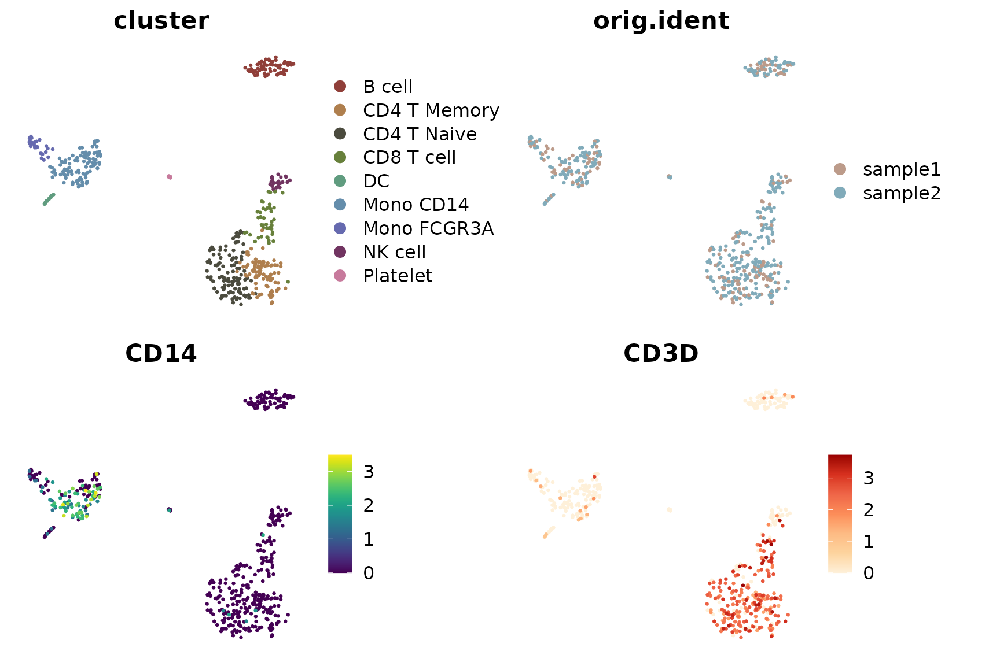
Adding Labels and Boxes
To further enhance the plot, you can add labels and bounding boxes to clearly delineate different groups or points of interest:
Simplifying Labels with Indices
For plots with lengthy cluster names, you can use indices to create cleaner visualizations:
DimPlot2(pbmc, index.title = "C", box = TRUE, label.color = "black")
Adding UMAP Arrows (New in v1.1.0)
Starting from v1.1.0, you can add simplified axis indicators to your
dimension reduction plots using the theme_umap_arrows
function. This is particularly useful for UMAP or t-SNE plots where
traditional axes are often removed to reduce visual clutter:
# Add simplified axis indicators
DimPlot2(
pbmc,
features = c("cluster", "orig.ident", "CD14", "CD3D"),
theme = NoAxes()
) + theme_umap_arrows()
The theme_umap_arrows function provides several
parameters for customization:
-
anchor_x/y: Position of the arrow origin -
line_length: Length of the arrow lines -
arrow_length: Size of arrowheads -
text_offset_x/y: Position of axis labels -
text_size: Font size for labels -
line_width: Width of arrow lines -
x_label/y_label: Custom axis labels
Multiple Feature Visualization
When visualizing multiple features simultaneously, you might want to add arrows to each subplot:
# Add arrows to each subplot
DimPlot2(
pbmc,
features = c("cluster", "orig.ident", "CD14", "CD3D"),
theme = theme_umap_arrows()
)Simultaneous Display of Three Features on a Dimension Reduction Plot
In SeuratExtend, a unique visualization method allows
for the simultaneous display of three features on the same dimension
reduction plot. The functions FeaturePlot3 and
FeaturePlot3.grid employ a color mixing system (either RYB
or RGB) to represent three different genes (or other continuous
variables). This method uses the principles of color mixing to
quantitatively display the expression levels or intensities of these
three features in each cell.
RYB and RGB Color Systems
In the RGB system, black represents no or low expression, and
brighter colors indicate higher levels: 
In the RYB system, white represents no expression, and deeper colors
indicate higher expression levels: 
Examples Using RYB and RGB Systems
Here’s how to display three markers using the RYB system, with red for CD3D, yellow for CD14, and blue for CD79A:
FeaturePlot3(pbmc, color = "ryb", feature.1 = "CD3D", feature.2 = "CD14", feature.3 = "CD79A", pt.size = 0.5)
For the RGB system, with red for CD3D, green for CD14, and blue for CD79A:
FeaturePlot3(pbmc, color = "rgb", feature.1 = "CD3D", feature.2 = "CD14", feature.3 = "CD79A", pt.size = 1)
Using Dark Theme (New in v1.2.0)
For improved visualization in presentations or in low-light environments, you can use the dark theme option:
FeaturePlot3(
pbmc,
color = "rgb",
feature.1 = "CD3D",
feature.2 = "CD14",
feature.3 = "CD79A",
pt.size = 1,
dark.theme = TRUE
)
This dark theme provides better contrast for visualizing gene expression patterns, particularly when using the RGB color system where brighter colors represent higher expression levels.
Batch Visualization with FeaturePlot3.grid
FeaturePlot3.grid extends FeaturePlot3 by
allowing multiple plots to be generated in one go. The
features parameter requires a vector where every three
values are assigned a color (RYB or RGB) and placed together in one
plot. If you wish to skip a color, use NA as a
placeholder.
For instance, to place the following five genes into two plots using the RYB system, and skip yellow in the second plot:
FeaturePlot3.grid(pbmc, features = c("CD3D", "CD14", "CD79A", "FCGR3A", NA, "LYZ"), pt.size = 0.5)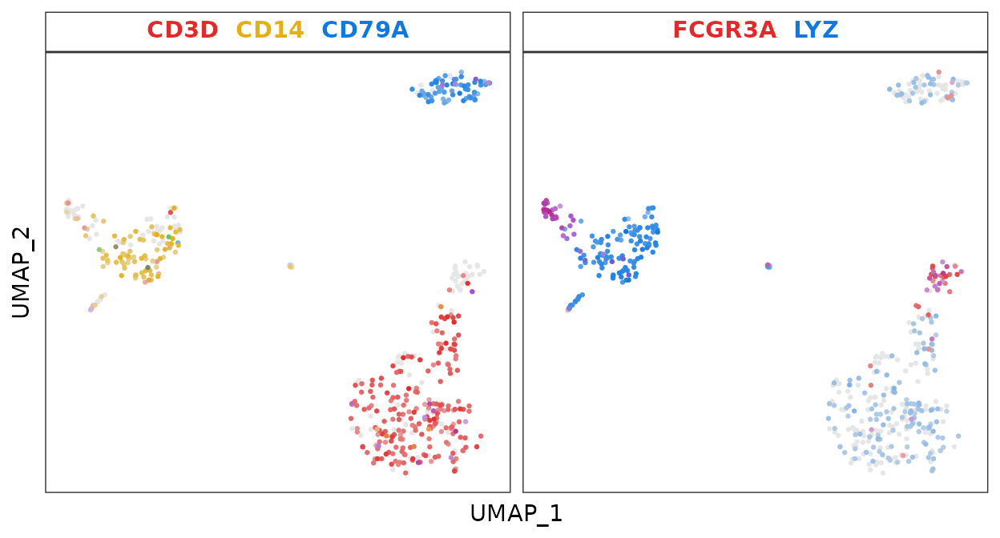
Using the RGB system:
FeaturePlot3.grid(pbmc, features = c("CD3D", "CD14", "CD79A", "FCGR3A", NA, "LYZ"), color = "rgb", pt.size = 1)
Using Dark Theme with Grid Layout (New in v1.2.0)
You can also apply the dark theme to FeaturePlot3.grid for enhanced visualization:
FeaturePlot3.grid(
pbmc,
features = c("CD3D", "CD14", "CD79A", "FCGR3A", NA, "LYZ"),
color = "rgb",
pt.size = 1,
dark.theme = TRUE,
legend = TRUE
)
The dark theme with legend enabled provides an elegant visualization that works well in presentations and publications.
Tips on Point Size
The background is usually white, so the choice of color system and
point size can significantly affect visual perception. In the RYB
system, where higher expression results in darker colors, a smaller
pt.size is preferable to prevent overlapping points. In
contrast, in the RGB system, higher expressions result in lighter
colors, potentially leading to visibility issues for highly expressed
cells that may blend into the white background. Here, a larger
pt.size is recommended so that the darker, low-expression
points can form a “background” to highlight the lighter, high-expression
points.
Generate a Heatmap Plot
Introduction
The Heatmap function provides a flexible and
comprehensive way to visualize matrices, especially those produced by
the CalcStats function. While heatmaps are excellent for
visualizing overall patterns across multiple groups and features, they
represent average expression levels through color intensity.
Note: Starting from v1.1.0, the default color scheme
has changed from
c(low = muted("blue"), mid = "white", high = muted("red"))
to "BuRd". This change was made to provide more vibrant
visualization using RColorBrewer palettes. To revert to the previous
color scheme, simply set
color_scheme = c(low = muted("blue"), mid = "white", high = muted("red")).
Basic Usage
First, let’s generate a sample matrix using the
CalcStats function:
# Calculate z-scores for variable features
genes <- VariableFeatures(pbmc)
toplot <- CalcStats(pbmc, features = genes, method = "zscore", order = "p", n = 5)Now, we can produce a basic heatmap:
# Create a basic heatmap
Heatmap(toplot, lab_fill = "zscore")
Adjusting Color Schemes
The color_scheme parameter allows for flexibility in
visualizing data. Here are some ways to change the color theme of your
heatmap:
# Viridis-A theme
Heatmap(toplot, lab_fill = "zscore", color_scheme = "A")
# White - blue - dark green
Heatmap(toplot, lab_fill = "zscore", color_scheme = "BuGn")For detailed information on color customization, refer to the Explore Color Functions section.
Modifying Axis and Labels
Sometimes, the first name on the x-axis might be too long and exceed
the left boundary of the plot. To prevent this issue and ensure all
labels are fully visible, you can increase the space on the left side of
the plot by adjusting the plot.margin parameter. For
example, to add more space, you can specify a larger value for the left
margin (l) like this:

For dense matrices with many features, you might want to show only a subset of gene names:
Create Enhanced Dot Plots (New in v1.1.0)
Introduction
While heatmaps are excellent for visualizing overall patterns, dot plots offer a complementary visualization that combines two key pieces of information: 1. The percentage of cells expressing each feature (represented by dot size) 2. The average expression level in expressing cells (represented by color intensity)
This dual representation can provide more detailed insights than a standard heatmap, particularly when expression patterns vary between cell populations.
Basic Usage
Let’s create a basic dot plot for some variable features:
# Select some variable features
genes <- VariableFeatures(pbmc)[1:10]
DotPlot2(pbmc, features = genes)Grouped Features
You can organize features into groups for clearer visualization:
# Create grouped features
grouped_features <- list(
"B_cell_markers" = c("MS4A1", "CD79A"),
"T_cell_markers" = c("CD3D", "CD8A", "IL7R"),
"Myeloid_markers" = c("CD14", "FCGR3A", "S100A8")
)
DotPlot2(pbmc, features = grouped_features)
Split Visualization
You can split the visualization by a metadata column to compare expression patterns across different conditions:
# Basic split visualization
DotPlot2(pbmc, features = genes, group.by = "cluster", split.by = "orig.ident", show_grid = FALSE)Alternative Split Visualization
The split groups can be represented either by border colors (default) or by dot colors:
# Using colors instead of borders for split groups
DotPlot2(pbmc,
features = genes,
group.by = "cluster",
split.by = "orig.ident",
split.by.method = "color",
show_grid = FALSE)
Customizing Appearance
You can customize various aspects of the plot, including color schemes, dot sizes, and grid lines:
DotPlot2(pbmc,
features = grouped_features,
color_scheme = "BuRd",
border = FALSE, # Remove dot borders
show_grid = FALSE, # Remove grid lines
flip = TRUE) # Flip coordinates
Create an Enhanced Violin Plot
Introduction
The VlnPlot2 function offers a revamped version of the
traditional violin plot, designed to be more space-efficient while
introducing additional visualization features. Unlike the original
VlnPlot in Seurat, this enhanced version integrates
boxplots, statistical annotations, and greater flexibility in plot
presentation.
Customizing Plot Elements
You can create different variations of the plot by adjusting its components. For instance, you might want to show only the box plot with quasirandom point distribution:
VlnPlot2(pbmc, features = genes, violin = FALSE, pt.style = "quasirandom", ncol = 1)
Managing Point Display
For cleaner visualization, you can hide individual points while still showing outliers:
VlnPlot2(pbmc, features = genes, pt = FALSE, ncol = 1)
Or hide both points and outliers for a minimal appearance:
VlnPlot2(pbmc, features = genes, pt = FALSE, hide.outlier = TRUE, ncol = 1)
Outline Style (New in v1.2.0)
You can change the violin plot style from filled to outline:
VlnPlot2(pbmc, features = genes, style = "outline", ncol = 1)
Adding Mean and Median Lines (New in v1.1.0)
For genes with low expression where boxplot might be hard to interpret (e.g., when median and quartiles overlap at zero), you can add mean/median lines for better visualization:
Split Visualization
You can group by cluster and split each cluster by samples:
VlnPlot2(pbmc, features = genes, group.by = "cluster", split.by = "orig.ident")Subset Analysis
You can focus on specific cell types and arrange plots in columns:
cells <- colnames(pbmc)[pbmc$cluster %in% c("B cell", "Mono CD14", "CD8 T cell")]
VlnPlot2(pbmc, features = genes, group.by = "cluster", cells = cells)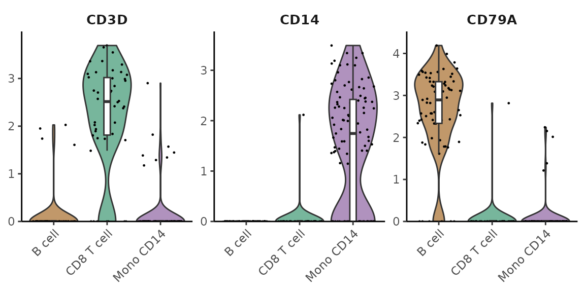
Statistical Analysis
Add statistical annotations using the Wilcoxon test, hiding non-significant results:
VlnPlot2(pbmc,
features = genes,
group.by = "cluster",
cells = cells,
stat.method = "wilcox.test",
hide.ns = TRUE)
Or specify particular comparisons using t-test:
VlnPlot2(pbmc,
features = genes,
group.by = "cluster",
cells = cells,
stat.method = "t.test",
comparisons = list(c(1,2), c(1,3)),
hide.ns = FALSE)
Using Matrix Input
You can also use VlnPlot2 with matrices, such as AUCell
scores from gene set enrichment analysis:
# Perform gene set analysis
pbmc <- GeneSetAnalysis(pbmc, genesets = hall50$human)
matr <- pbmc@misc$AUCell$genesets
# Plot the first three pathways
VlnPlot2(matr[1:3,], f = pbmc$cluster, ncol = 1)
Note on Statistical Testing: When using
stat.methodto add statistical annotations to violin plots, be aware that p-values can be artificially inflated in large single-cell datasets due to the high number of cells. This may result in statistically significant differences (small p-values) even when the biological effect size is minimal. We recommend being cautious with statistical interpretations, especially when visual differences are subtle. Consider examining log fold changes (logFC) between groups to better assess the magnitude of biological differences. For a comprehensive visualization of differences between two groups,WaterfallPlot()(see Generate a Waterfall Plot) can provide logFC values along with statistical significance. By default,VlnPlot2uses the Holm method (p.adjust.method = "holm") to adjust p-values for multiple comparisons.
Visualize Cluster Distribution in Samples
Introduction
The ClusterDistrBar function visualizes how clusters are
distributed across different samples. It can show both absolute counts
and proportions, with various customization options.
Basic Usage
Create a basic bar plot showing cluster distribution within samples:
ClusterDistrBar(origin = pbmc$orig.ident, cluster = pbmc$cluster)
Absolute Cell Counts
To show absolute cell counts instead of proportions:
ClusterDistrBar(origin = pbmc$orig.ident, cluster = pbmc$cluster, percent = FALSE)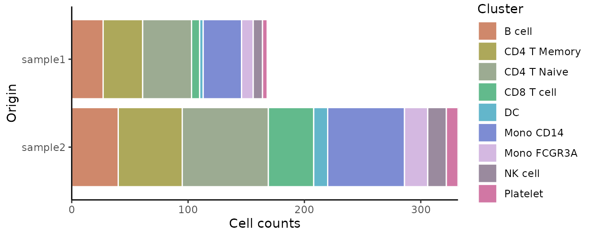
Normalized Proportions with Reversed Axes
For normalized data with reversed axes:
ClusterDistrBar(origin = pbmc$orig.ident, cluster = pbmc$cluster, rev = TRUE, normalize = TRUE)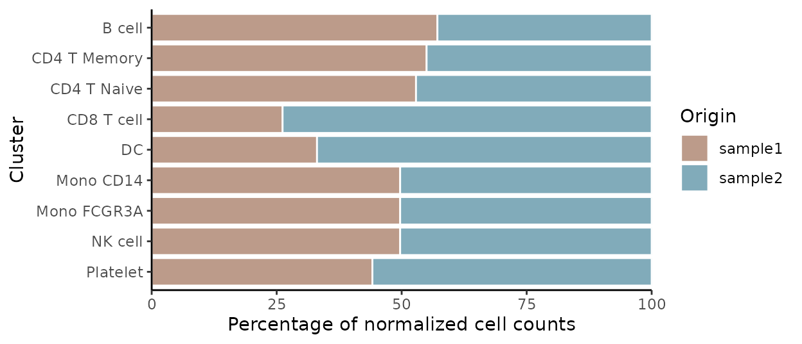
Vertical Orientation
Create a vertical bar plot:
ClusterDistrBar(origin = pbmc$orig.ident, cluster = pbmc$cluster, flip = FALSE, reverse_order = FALSE)
Non-Stacked Display
Show bars side by side instead of stacked:
ClusterDistrBar(origin = pbmc$orig.ident,
cluster = pbmc$cluster,
flip = FALSE,
stack = FALSE)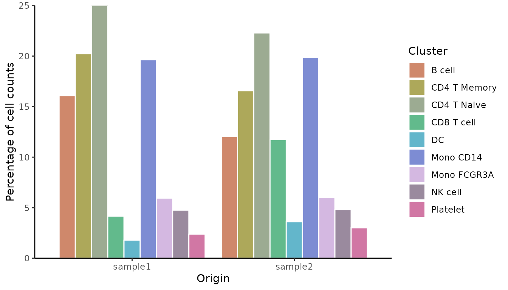
Comparing Cluster Distribution Between Conditions (New in v1.2.0)
For comparing cluster distribution patterns between experimental
conditions, SeuratExtend offers the
ClusterDistrPlot function. This function extends
ClusterDistrBar functionality by adding the ability to
group samples by a condition variable, creating boxplots grouped by
condition instead of stacked bars.
The function supports all parameters from
ClusterDistrBar when using the standard bar plot mode, and
inherits styling options from VlnPlot2 when using the
boxplot mode with conditions. This makes it highly versatile for
different visualization needs.
# Compare cluster distribution between conditions
ClusterDistrPlot(
origin = pbmc$sample_id,
cluster = pbmc$cluster,
condition = pbmc$condition
)## No statistical significance.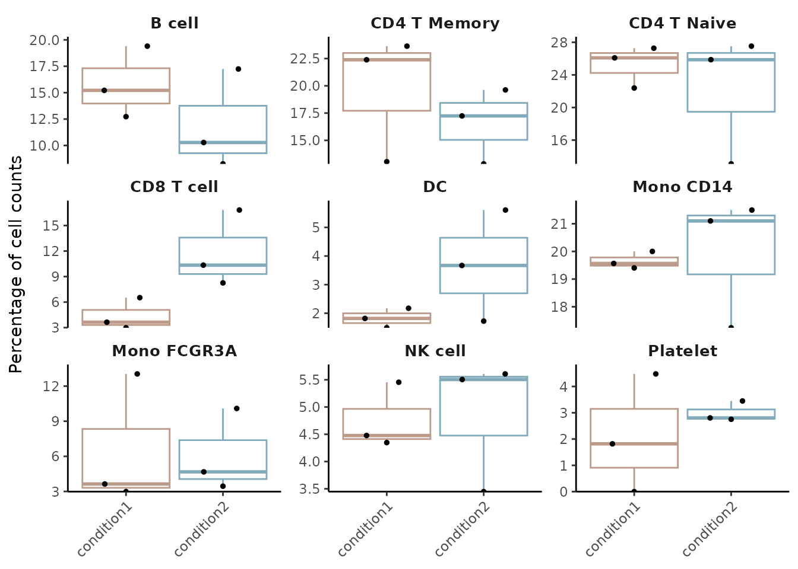
When the condition parameter is not provided,
ClusterDistrPlot behaves exactly like
ClusterDistrBar, providing seamless backward
compatibility.
Generate a Waterfall Plot
Introduction
Waterfall plots are powerful tools for visualizing differences between two conditions, effectively displaying metrics like gene expression differences or pathway enrichment scores. Note that starting from v1.1.0, similar to other visualization functions, the default color scheme has been updated to use more vibrant RColorBrewer palettes.
Basic Usage
First, let’s create a matrix using the GeneSetAnalysis()
function:
pbmc <- GeneSetAnalysis(pbmc, genesets = hall50$human)
matr <- pbmc@misc$AUCell$genesetsGenerate a basic waterfall plot comparing two cell types:
WaterfallPlot(matr, f = pbmc$cluster, ident.1 = "Mono CD14", ident.2 = "CD8 T cell")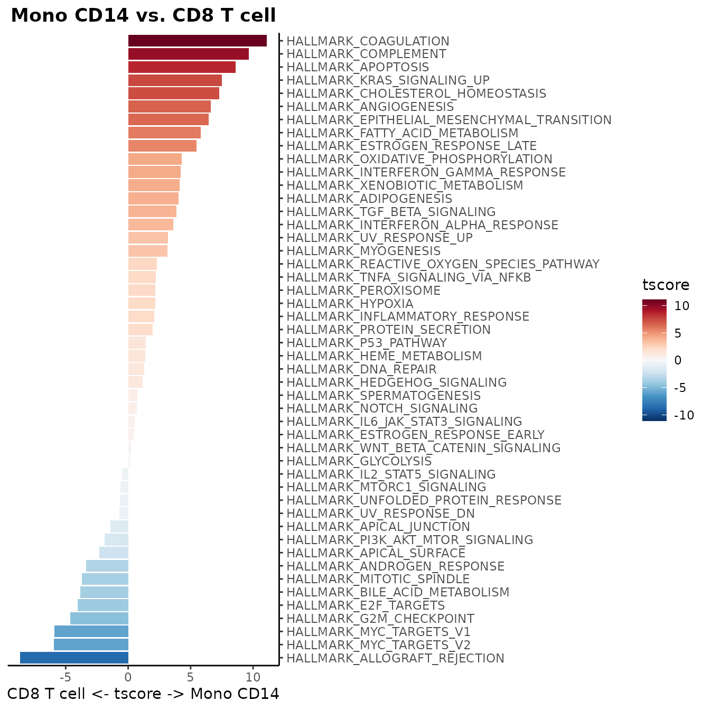
WaterfallPlot Style: “segment” (New in v1.1.0)
Added a new visualization style “segment” to WaterfallPlot, providing an alternative way to display differences between conditions:
# Create a plot using the new segment style
WaterfallPlot(
matr,
f = pbmc$cluster,
ident.1 = "Mono CD14",
ident.2 = "CD8 T cell",
style = "segment",
color_theme = "D"
)
Filtering by Significance
Focus on significant differences by setting a threshold:
WaterfallPlot(
matr,
f = pbmc$cluster,
ident.1 = "Mono CD14",
ident.2 = "CD8 T cell",
len.threshold = 2)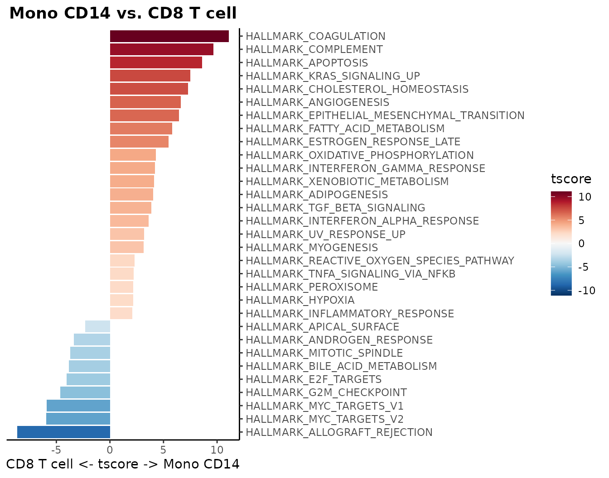
Gene Expression Comparison
Compare expression levels directly from a Seurat object:
genes <- VariableFeatures(pbmc)[1:80]
WaterfallPlot(
pbmc,
group.by = "cluster",
features = genes,
ident.1 = "Mono CD14",
ident.2 = "CD8 T cell",
length = "logFC")## Using pseudocount = 1 for logFC calculation.Focusing on Top Features
Display only the most differentially expressed genes:
WaterfallPlot(
pbmc,
group.by = "cluster",
features = genes,
ident.1 = "Mono CD14",
ident.2 = "CD8 T cell",
length = "logFC",
top.n = 20)## Using pseudocount = 1 for logFC calculation.Using Log2 or Log10 Fold Change (New in v1.2.0)
By default, WaterfallPlot uses natural logarithm (base e) for fold
change calculations. You can specify a different base using the
log.base parameter:
# Using log base 2 for fold change calculations
WaterfallPlot(
pbmc,
group.by = "cluster",
features = genes,
ident.1 = "Mono CD14",
ident.2 = "CD8 T cell",
length = "logFC",
log.base = "2", # Use log2 instead of natural log
top.n = 20)## Using pseudocount = 1 for logFC calculation.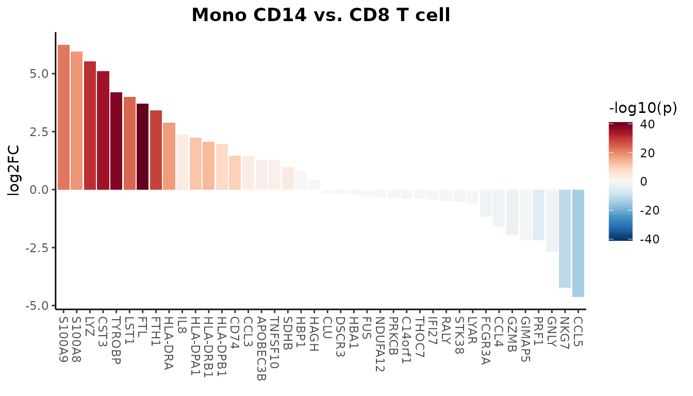
Notes on LogFC Calculation
When calculating log fold changes, WaterfallPlot and VolcanoPlot (see the next section):
-
Adds a pseudocount to prevent issues with zero
values:
- For most data: Uses pseudocount=1 by default
- For data with values between 0-1 (like AUCell scores): Automatically uses pseudocount=0.01
- You can customize this value with the
pseudocountparameter
-
Uses natural logarithm (base e) by default, but
supports other bases:
-
log.base = "e": Natural logarithm (default) -
log.base = "2": Log base 2 -
log.base = "10": Log base 10 - Any numeric value for custom bases
-
-
For Seurat objects, applies
expm1transformation to normalized data by default:- This ensures consistency with Seurat’s FindMarkers function
- Can be disabled with
exp.transform = FALSE
The formula used is:
log((mean(x[group1] + pseudocount) / mean(x[group2] + pseudocount)), base)
Create Volcano Plots (New in v1.1.0)
Introduction
The Volcano plot is a specialized variation of the scatter plot that combines statistical significance (-log10 p-value) with magnitude of change (typically log fold change). While Waterfall plots focus on ordered visualization of differences, Volcano plots provide a comprehensive view of both the magnitude and statistical significance of changes.
Basic Usage
Create a basic volcano plot comparing two cell types:
VolcanoPlot(pbmc,
ident.1 = "B cell",
ident.2 = "CD8 T cell")Customizing Thresholds
You can set custom thresholds for both axes:
VolcanoPlot(
pbmc,
ident.1 = "B cell",
ident.2 = "CD8 T cell",
x.threshold = 0.5, # Log fold change threshold
y.threshold = 2 # -log10(p-value) threshold
)
Fine-tuning Plot Parameters
Adjust quantile thresholds and number of labeled genes:
VolcanoPlot(
pbmc,
ident.1 = "B cell",
ident.2 = "CD8 T cell",
x.quantile = 0.99, # Less stringent x threshold
y.quantile = 0.95, # More stringent y threshold
top.n = 5, # Label fewer genes
color = c("grey20", "grey70", "darkred") # Custom colors
)Using Alternative Statistics
Using t-score instead of p-value for the y-axis can be particularly useful in single-cell analysis. Due to the large number of cells in single-cell datasets, p-values often become extremely significant, causing many genes to cluster at the top of the y-axis when using -log10(p-value). This can make it difficult to distinguish between genes that are all technically highly significant. T-scores provide better spread and can help create more informative visualizations.
VolcanoPlot(
pbmc,
ident.1 = "B cell",
ident.2 = "CD8 T cell",
y = "tscore"
)Using Log2 or Log10 Fold Change (New in v1.2.0)
By default, VolcanoPlot uses natural logarithm (base e) for fold
change calculations. You can specify a different base using the
log.base parameter:
VolcanoPlot(
pbmc,
ident.1 = "B cell",
ident.2 = "CD8 T cell",
log.base = "2" # Use log2 instead of natural log
)Matrix Input
You can also use matrices, such as pathway enrichment scores:
# Using the previously calculated pathway enrichment scores
VolcanoPlot(
matr,
f = pbmc$cluster,
ident.1 = "B cell",
ident.2 = "Mono CD14",
x.quantile = 0.8,
y.quantile = 0.8,
top.n = 5)
Tips: Choosing the Right Visualization
When visualizing gene expression or pathway activity data, different plot types serve different purposes. Here’s a guide to help you choose:
- Overview Visualizations:
-
Heatmaps:
- Best for: Comparing many features across multiple groups using color intensity
- Advantage: Compact visualization of large-scale patterns
- Limitation: Color intensity alone may not show detailed expression patterns
-
Dot Plots:
- Best for: Similar to heatmaps but with additional information
- Advantage: Shows both expression level (color) and percent expressing cells (size)
- Limitation: Takes more space than heatmaps
-
Heatmaps:
- Two-Group Comparisons:
-
Waterfall Plots:
- Best for: Ordered visualization of differences between two groups
- Advantage: Clear ranking of most differential features
- Limitation: Limited to two-group comparisons
-
Volcano Plots:
- Best for: Combining fold change with statistical significance
- Advantage: Shows both effect size and significance
- Limitation: Also limited to two-group comparisons
-
Waterfall Plots:
- Detailed Expression Analysis:
-
Violin Plots:
- Best for: Detailed view of expression distribution
- Advantage: Shows full distribution shape and statistical comparisons
- Limitation: Space-intensive, limiting the number of features that can be shown
-
Violin Plots:
Explore Color Functions
The SeuratExtend package provides comprehensive color
management across all visualization functions. Each function type
handles colors slightly differently depending on whether it’s dealing
with discrete or continuous variables.
For Functions Handling Discrete Variables
-
DimPlot2, VlnPlot2,
ClusterDistrBar (using
colsparameter)- Eight color_pro styles: “default”, “light”, “pro_red”, “pro_yellow”, “pro_green”, “pro_blue”, “pro_purple”, “bright” (new in v1.2.0)
- Five color_iwh styles: “iwh_default”, “iwh_intense”, “iwh_pastel”, “iwh_all”, “iwh_all_hard”
- All RColorBrewer qualitative palettes (e.g., “Set1”, “Set2”, “Set3”, “Paired”, “Dark2”, “Accent”, “Pastel1”, “Pastel2”)
- Custom colors as vector of hex codes or color names
Note: Based on user feedback, starting from v1.2.0, the default discrete color scheme has been changed to “light” to avoid color inconsistency in DimPlot2 when toggling between labeled and unlabeled displays. If you prefer to retain the original “default” (darker) color scheme for discrete variables in
DimPlot2, you can use:seu <- save_colors(seu, col_list = list("discrete" = "default")). This will set the default for all discrete variables to the darker color scheme.
For Functions Handling Continuous Variables
-
DimPlot2 (using
colsparameter for continuous features) -
Heatmap, DotPlot2,
WaterfallPlot (using
color_schemeparameter)
Available options for continuous variables:
- Viridis Color Schemes (see viridis
palettes
- Options “A” through “H” from the viridis package
- Example:
cols = "D"for the ‘viridis’ option
- (New in v1.1.0) RColorBrewer
Sequential Palettes
- Options include: “Blues”, “BuGn”, “BuPu”, “GnBu”, “Greens”, “Greys”, “Oranges”, “OrRd”, “PuBu”, “PuBuGn”, “PuRd”, “Purples”, “RdPu”, “Reds”, “YlGn”, “YlGnBu”, “YlOrBr”, “YlOrRd”
- Add “-rev” suffix to reverse any palette (e.g., “Blues-rev”)
- (New in v1.1.0) RColorBrewer
Diverging Palettes
- Options include: “BrBG”, “PiYG”, “PRGn”, “PuOr”, “RdBu”, “RdGy”, “RdYlBu”, “RdYlGn”, “Spectral”
- Add “-rev” suffix to reverse any palette
- (New in v1.1.0) Custom Diverging Palettes
- Additional options: “GnYlRd”, “BuYlRd”, “GyRd”, “BuRd”, “PuOr”
- Custom Gradient Specifications
- Three-point gradient:
c(low = "blue", mid = "white", high = "red") - Two-point gradient:
c(low = "grey", high = "red") - Vector of colors for custom gradient
- Three-point gradient:
Recommended Color Schemes
Here are some recommended color schemes for different visualization needs in single-cell analysis:
For Discrete Variables (e.g., clusters, conditions)
The “default” (dark) theme and “light” color scheme from
SeuratExtend’s color_pro are particularly effective for
different visualization needs:
library(cowplot)
plot_grid(
DimPlot2(pbmc, cols = "default", theme = NoAxes() + NoLegend()),
ClusterDistrBar(pbmc$orig.ident, pbmc$cluster, cols = "default", flip = FALSE, border = "black") +
theme(axis.title.x = element_blank())
)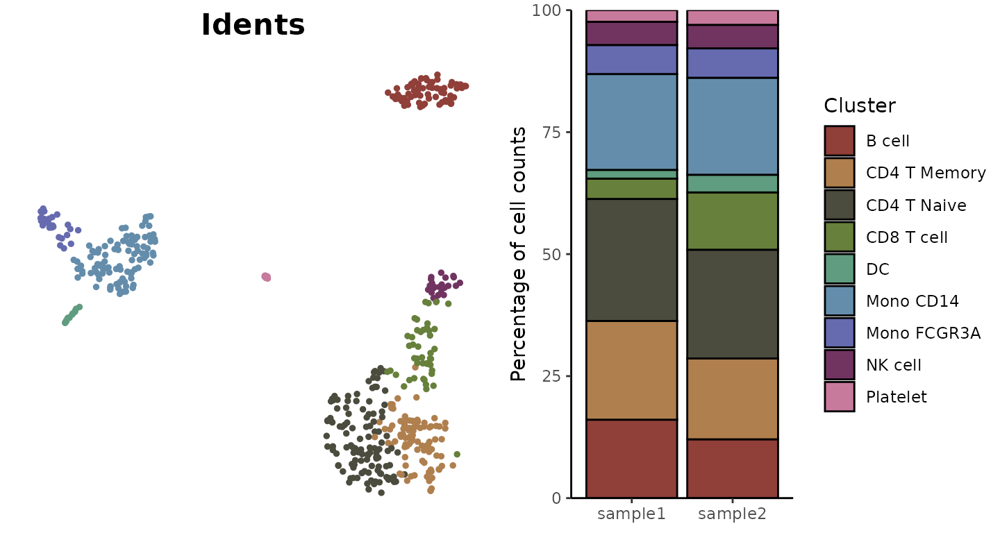
library(cowplot)
plot_grid(
DimPlot2(pbmc, cols = "light", theme = NoAxes() + NoLegend()),
ClusterDistrBar(pbmc$orig.ident, pbmc$cluster, cols = "light", flip = FALSE) +
theme(axis.title.x = element_blank())
)
For visualizations requiring more vibrant colors with high contrast (new in v1.2.0):
For Continuous Variables (e.g., gene expression)
the “A” or “D” color schemes from viridis:
Heatmap(toplot, lab_fill = "zscore", color_scheme = "A")
WaterfallPlot(
pbmc, group.by = "cluster", features = VariableFeatures(pbmc)[1:80],
ident.1 = "Mono CD14", ident.2 = "CD8 T cell", length = "logFC",
top.n = 20, color_theme = "D")## Using pseudocount = 1 for logFC calculation.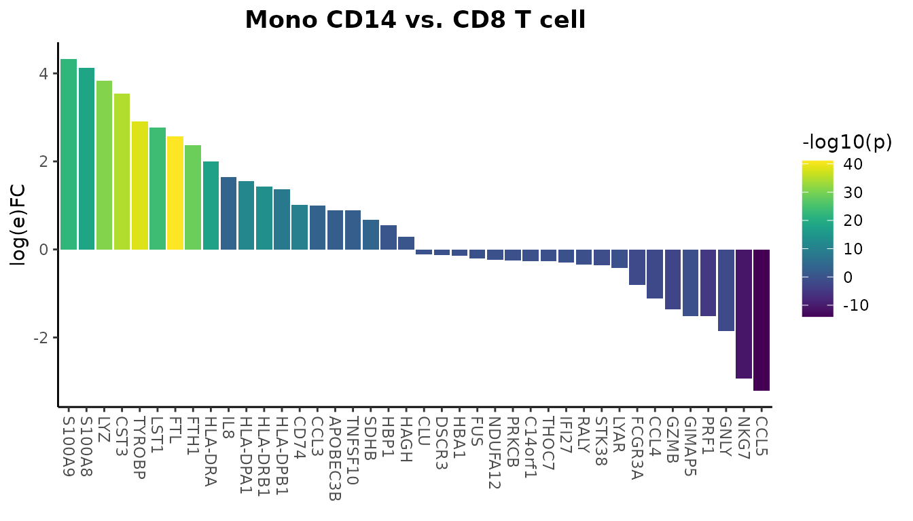
You can also use various color palettes from RColorBrewer (https://r-graph-gallery.com/38-rcolorbrewers-palettes.html):
library(RColorBrewer)
markers_genes <- c(
"MS4A1", "GNLY", "CD3E",
"CD8A", "CCR7", "CD14",
"FCER1A", "FCGR3A", "PPBP")
DimPlot2(
pbmc,
features = markers_genes,
cols = "OrRd",
theme = NoAxes())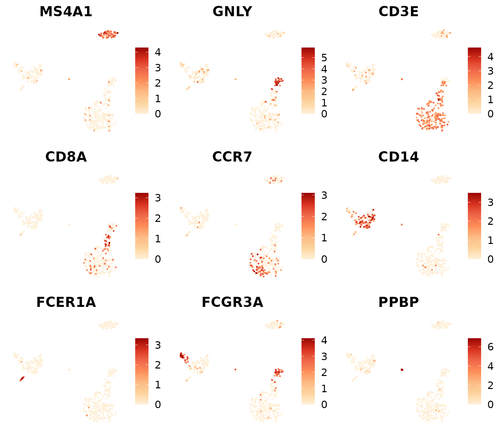
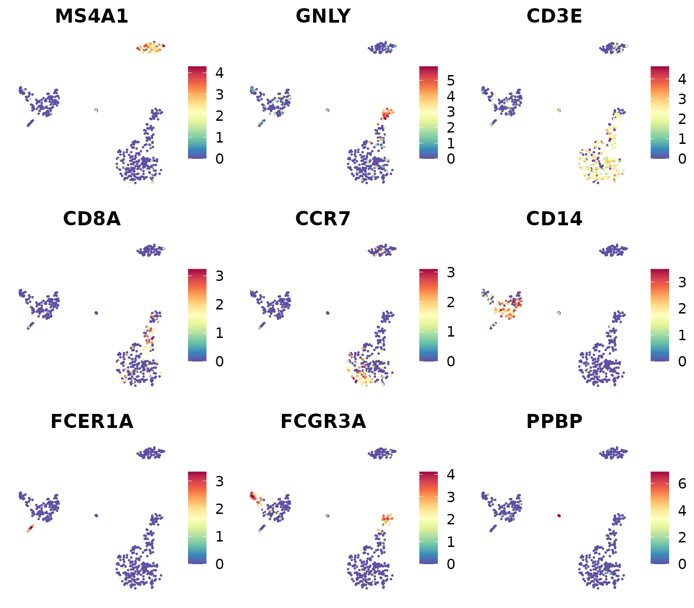
Professional Discrete Color Presets with color_pro
The color_pro function is designed to generate
professional discrete color presets, ideal for data science
visualizations, particularly in fields like scRNA-seq analysis where
aesthetics must not compromise the clarity and seriousness of scientific
communication.
The Philosophy Behind color_pro
Choosing the right colors for scientific visualizations is crucial. Colors must be distinct enough to differentiate data points clearly but coordinated and subdued enough to maintain professionalism and avoid visual strain.
What to AVOID in Scientific Plotting
-
Coordinated but Indistinct Colors: Using monochromatic schemes can reduce visual distinction, which might cause data points to blend together.
Example of an inadvisable choice:
DimPlot2(pbmc, cols = "Greens")-
Sufficiently Distinct but Overly Saturated Colors: High saturation can be visually aggressive and distracting, detracting from the scientific message.
Example of overly saturated colors:
DimPlot2(pbmc, cols = c("#ccffaa","#c00bff","#cfdb00","#0147ee","#f67900","#1b002c","#00e748","#e30146","#ffb1e8"))-
Good Distinction and Coordination but Too Lively: While certain vibrant schemes might be engaging in an advertising context, they may be considered too informal for professional journal standards. However, we recognize that sometimes higher contrast and more vibrant colors are needed for certain analyses or presentations. For these situations, we provide the “bright” color scheme (new in v1.2.0) while still recommending more subdued options for formal publications.
Example of colors that might be too lively for formal publication but useful in other contexts:
DimPlot2(pbmc, cols = c("#ff2026","#cf5d00","#ffd03f","#649f00","#a3f83d","#82cc58","#6645fe","#d8009c","#ff43a2"))While the RColorBrewer package offers some good solutions, its
options are limited and support a maximum of only 12 colors. This can be
inadequate for visualizing data with a larger number of clusters. The
default ggplot color palette, derived from hue_pal(), can assign an
arbitrary number of colors, but similarly suffers from insufficient
distinction when many colors are used. This is because the default
palette differentiates colors only based on hue, without utilizing
luminance and saturation, which limits its effectiveness. To address
these limitations, SeuratExtend provides
color_pro, which includes eight color schemes: “default”,
“light”, “red”, “yellow”, “green”, “blue”, “purple”, and “bright” (new
in v1.2.0). These presets are generated using the algorithm from I Want
Hue (http://medialab.github.io/iwanthue/) with adjusted
parameters, which is optimized for creating color palettes that are
visually pleasing and distinctly separable.
Default Color Scheme
The “default” color scheme spans the entire hue domain but features reduced brightness and saturation, supporting 2 to 50 colors with five different presets per color. This scheme is ideal for general use where distinctiveness and subtlety are equally important.
Note: In SeuratExtend v1.0.0, the “default” color scheme was the actual default setting (hence the name), representing a darker theme suitable for general visualizations. Based on user feedback, starting from v1.2.0, the “light” color scheme became the true default setting as users preferred it for better visibility, especially with labeled plots. However, we maintained the original naming convention—so “default” still refers to the darker theme. If you prefer the darker theme, you can manually specify
cols = "default"in your function calls.
Example using the “default” color scheme:
library(cowplot)
library(SeuratExtend)
plot_grid(
DimPlot2(pbmc, theme = NoAxes() + NoLegend(), cols = "default"),
ClusterDistrBar(pbmc$orig.ident, pbmc$cluster, flip = FALSE, cols = "default") +
theme(axis.title.x = element_blank())
)Light Color Scheme
The “light” color scheme also covers the entire hue range but with increased brightness and reduced saturation, making it suitable when using labels with darker texts which may require a lighter background for visibility.
Example using the “light” color scheme:
plot_grid(
DimPlot2(pbmc, label = TRUE, repel = TRUE, theme = NoAxes() + NoLegend()),
ClusterDistrBar(pbmc$orig.ident, pbmc$cluster, cols = "light", flip = FALSE, border = "black") +
theme(axis.title.x = element_blank())
)Specialized Color Schemes
For color coordination that reflects the biological or categorical properties of the data, such as differentiating subtypes within a cell lineage, the specialized color schemes like “red”, “yellow”, “green”, “blue”, and “purple” offer hues confined to specific regions. These schemes support 2 to 25 colors, providing options that are both vibrant and harmonious without being overwhelming.
Red Color Scheme
Example using the “red” color scheme:
plot_grid(
DimPlot2(pbmc, cols = "pro_red", theme = NoAxes() + NoLegend()),
ClusterDistrBar(pbmc$orig.ident, pbmc$cluster, cols = "pro_red", flip = FALSE) +
theme(axis.title.x = element_blank())
)Yellow Color Scheme
Example using the “yellow” color scheme:
plot_grid(
DimPlot2(pbmc, cols = "pro_yellow", theme = NoAxes() + NoLegend()),
ClusterDistrBar(pbmc$orig.ident, pbmc$cluster, cols = "pro_yellow", flip = FALSE) +
theme(axis.title.x = element_blank())
)Green Color Scheme
Example using the “green” color scheme:
plot_grid(
DimPlot2(pbmc, cols = "pro_green", theme = NoAxes() + NoLegend()),
ClusterDistrBar(pbmc$orig.ident, pbmc$cluster, cols = "pro_green", flip = FALSE, border = "black") +
theme(axis.title.x = element_blank())
)Blue Color Scheme
Example using the “blue” color scheme:
plot_grid(
DimPlot2(pbmc, cols = "pro_blue", theme = NoAxes() + NoLegend()),
ClusterDistrBar(pbmc$orig.ident, pbmc$cluster, cols = "pro_blue", flip = FALSE) +
theme(axis.title.x = element_blank())
)Purple Color Scheme
Example using the “purple” color scheme:
plot_grid(
DimPlot2(pbmc, cols = "pro_purple", theme = NoAxes() + NoLegend()),
ClusterDistrBar(pbmc$orig.ident, pbmc$cluster, cols = "pro_purple", flip = FALSE) +
theme(axis.title.x = element_blank())
)Generating Color Codes
The color_pro function can generate between 2 to 50
colors:
color_pro(n = 2) # Example output: "#a05d49" "#6181a7"
color_pro(5) # Example output: "#996742" "#5e824b" "#5d7880" "#7169a7" "#9f516c"
color_pro(10) # Generates 10 colors
color_pro(20) # Generates 20 colors
color_pro(50) # Generates 50 colorsVisual demonstration of different color sets:
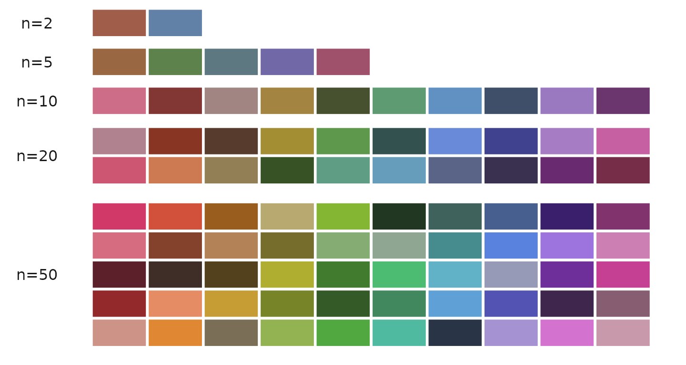
Available Color Schemes
color_pro offers eight different styles: “default”,
“light”, “red”, “yellow”, “green”, “blue”, “purple”, and “bright”.
Example generating 10 colors from each style:
color_pro(10, col.space = 1) # default
color_pro(10, 2) # light
color_pro(10, 3) # red
color_pro(10, 4) # yellow
color_pro(10, 5) # green
color_pro(10, 6) # blue
color_pro(10, 7) # purple
color_pro(10, 8) # brightVisual comparison:
Sorting Options
color_pro supports sorting by “hue” (default) or by
“difference” for enhanced distinction among colors. This feature can be
specified by name or by numbers 1 or 2.
Example of sorting colors by hue and by difference:
Visualizing the effect of different sorting methods:
Random Sequence Options
Each color scheme and number of colors have five different random sequences available, providing variations even within the same parameters.
Example of generating different sets from the default color scheme:
color_pro(10, 1, 1, set = 1)
color_pro(10, 1, 1, 2)
color_pro(10, 1, 1, 3)
color_pro(10, 1, 1, 4)
color_pro(10, 1, 1, 5)Visualizing different random sequences:
IWantHue Color Series (color_iwh)
In addition to color_pro, SeuratExtend
incorporates the I Want Hue algorithm to generate a series
of color palettes. These palettes, known as color_iwh,
include five default styles optimized for various visualization needs.
Unlike color_pro, color_iwh does not support
different sorting options and defaults to sorting by difference for
maximum color distinction.
color_iwh Color Series Overview
The color_iwh function provides the following predefined
color schemes:
- default: Suitable for general use with subtle color variations, supporting 2 to 20 colors.
- intense: Features vivid colors, supporting 2 to 30 colors, ideal for making impactful visual statements.
- pastel: Offers soft, soothing colors, supporting 2 to 18 colors, perfect for light-themed visualizations.
- all: Utilizes the full color spectrum with a soft k-means clustering approach, supporting 2 to 50 colors.
- all_hard: Also covers the full color spectrum but uses a hard force vector clustering method, supporting 30 to 50 colors.
Generating Colors with color_iwh
To generate colors using the color_iwh function, simply
specify the number of colors and the style index. Here are examples of
generating 10 colors from each predefined style:
Example of generating colors from each color_iwh
style:
color_iwh(10, 1) # default
color_iwh(10, 2) # intense
color_iwh(10, 3) # pastel
color_iwh(10, 4) # all
color_iwh(30, 5) # all_hardVisual comparison of color_iwh palettes:
##
## Attaching package: 'hyc'## The following object is masked from 'package:SeuratExtend':
##
## show_col2Viridis and RColorBrewer Palettes
Viridis Options
The viridis package provides colorblind-friendly, perceptually uniform color scales. Here are all available options:
RColorBrewer Palettes
RColorBrewer provides carefully chosen color palettes for different types of data:
library(RColorBrewer)
display.brewer.all()Additional Color Functions
Using ryb2rgb() to Convert RYB to RGB
The ryb2rgb() function translates RYB color values to
RGB hex codes:
## [1] "#CCAF80"Visualizing primary and secondary colors:
Using save_colors to Manage Color Settings
The save_colors function stores color settings within
your Seurat object:
# Save color settings
pbmc <- save_colors(pbmc, col_list = list(
"cluster" = "pro_blue",
"CD14" = "D",
"CD3D" = c("#EEEEEE", "black")
))
# Now, when using DimPlot2, the specified colors for 'cluster', 'CD14', and 'CD3D' are automatically applied
DimPlot2(pbmc, features = c("cluster", "orig.ident", "CD14", "CD3D"), theme = NoAxes())Additional Resources
For more information about color palettes:
- RColorBrewer palettes: https://r-graph-gallery.com/38-rcolorbrewers-palettes.html
- Viridis palettes: https://cran.r-project.org/web/packages/viridis/vignettes/intro-to-viridis.html
## R version 4.4.0 (2024-04-24)
## Platform: x86_64-pc-linux-gnu
## Running under: Ubuntu 20.04.6 LTS
##
## Matrix products: default
## BLAS: /usr/lib/x86_64-linux-gnu/blas/libblas.so.3.9.0
## LAPACK: /usr/lib/x86_64-linux-gnu/lapack/liblapack.so.3.9.0
##
## locale:
## [1] LC_CTYPE=en_US.UTF-8 LC_NUMERIC=C
## [3] LC_TIME=de_BE.UTF-8 LC_COLLATE=en_US.UTF-8
## [5] LC_MONETARY=de_BE.UTF-8 LC_MESSAGES=en_US.UTF-8
## [7] LC_PAPER=de_BE.UTF-8 LC_NAME=C
## [9] LC_ADDRESS=C LC_TELEPHONE=C
## [11] LC_MEASUREMENT=de_BE.UTF-8 LC_IDENTIFICATION=C
##
## time zone: Europe/Brussels
## tzcode source: system (glibc)
##
## attached base packages:
## [1] stats4 grid stats graphics grDevices utils datasets
## [8] methods base
##
## other attached packages:
## [1] hyc_0.1.6 tidyr_1.3.1
## [3] DelayedMatrixStats_1.26.0 DelayedArray_0.30.1
## [5] SparseArray_1.4.8 S4Arrays_1.4.1
## [7] abind_1.4-5 IRanges_2.38.1
## [9] S4Vectors_0.42.1 MatrixGenerics_1.16.0
## [11] matrixStats_1.3.0 BiocGenerics_0.50.0
## [13] ggbeeswarm_0.7.2 rlang_1.1.4
## [15] scales_1.3.0 mosaic_1.9.1
## [17] mosaicData_0.20.4 ggformula_0.12.0
## [19] Matrix_1.7-0 lattice_0.22-6
## [21] ggtext_0.1.2 rlist_0.4.6.2
## [23] magrittr_2.0.3 dplyr_1.1.4
## [25] ggpubr_0.6.0 reshape2_1.4.4
## [27] ggrepel_0.9.5 viridis_0.6.5
## [29] viridisLite_0.4.2 cowplot_1.1.3
## [31] RColorBrewer_1.1-3 ggplot2_3.5.1
## [33] SeuratExtend_1.2.0 SeuratExtendData_0.3.0
## [35] Seurat_5.2.1 SeuratObject_5.0.2
## [37] sp_2.1-4
##
## loaded via a namespace (and not attached):
## [1] RcppAnnoy_0.0.22 splines_4.4.0 later_1.3.2
## [4] tibble_3.2.1 polyclip_1.10-6 fastDummies_1.7.3
## [7] lifecycle_1.0.4 rstatix_0.7.2 globals_0.16.3
## [10] MASS_7.3-61 backports_1.5.0 plotly_4.10.4
## [13] sass_0.4.9 rmarkdown_2.29 jquerylib_0.1.4
## [16] yaml_2.3.9 httpuv_1.6.15 sctransform_0.4.1
## [19] spam_2.10-0 spatstat.sparse_3.1-0 reticulate_1.38.0
## [22] pbapply_1.7-2 zlibbioc_1.50.0 Rtsne_0.17
## [25] purrr_1.0.2 labelled_2.13.0 irlba_2.3.5.1
## [28] listenv_0.9.1 spatstat.utils_3.0-5 goftest_1.2-3
## [31] RSpectra_0.16-1 spatstat.random_3.2-3 fitdistrplus_1.2-1
## [34] parallelly_1.37.1 pkgdown_2.0.7 commonmark_1.9.1
## [37] codetools_0.2-20 xml2_1.3.6 tidyselect_1.2.1
## [40] farver_2.1.2 spatstat.explore_3.2-7 jsonlite_1.8.8
## [43] progressr_0.14.0 ggridges_0.5.6 survival_3.7-0
## [46] systemfonts_1.1.0 tools_4.4.0 ragg_1.3.2
## [49] ica_1.0-3 Rcpp_1.0.13 glue_1.7.0
## [52] gridExtra_2.3 xfun_0.45 withr_3.0.0
## [55] fastmap_1.2.0 fansi_1.0.6 digest_0.6.36
## [58] R6_2.5.1 mime_0.12 textshaping_0.4.0
## [61] colorspace_2.1-0 scattermore_1.2 tensor_1.5
## [64] markdown_1.13 spatstat.data_3.1-2 utf8_1.2.4
## [67] generics_0.1.3 data.table_1.15.4 httr_1.4.7
## [70] htmlwidgets_1.6.4 uwot_0.2.2 pkgconfig_2.0.3
## [73] gtable_0.3.5 lmtest_0.9-40 XVector_0.44.0
## [76] htmltools_0.5.8.1 carData_3.0-5 dotCall64_1.1-1
## [79] png_0.1-8 knitr_1.48 rstudioapi_0.16.0
## [82] nlme_3.1-165 cachem_1.1.0 zoo_1.8-12
## [85] stringr_1.5.1 KernSmooth_2.23-24 parallel_4.4.0
## [88] miniUI_0.1.1.1 vipor_0.4.7 desc_1.4.3
## [91] pillar_1.9.0 vctrs_0.6.5 RANN_2.6.1
## [94] promises_1.3.0 car_3.1-2 xtable_1.8-4
## [97] cluster_2.1.6 beeswarm_0.4.0 evaluate_0.24.0
## [100] cli_3.6.3 compiler_4.4.0 crayon_1.5.3
## [103] future.apply_1.11.2 ggsignif_0.6.4 labeling_0.4.3
## [106] plyr_1.8.9 forcats_1.0.0 fs_1.6.4
## [109] stringi_1.8.4 deldir_2.0-4 munsell_0.5.1
## [112] lazyeval_0.2.2 spatstat.geom_3.2-9 mosaicCore_0.9.4.0
## [115] RcppHNSW_0.6.0 hms_1.1.3 patchwork_1.2.0
## [118] sparseMatrixStats_1.16.0 future_1.33.2 shiny_1.8.1.1
## [121] highr_0.11 haven_2.5.4 ROCR_1.0-11
## [124] gridtext_0.1.5 igraph_2.0.3 broom_1.0.6
## [127] memoise_2.0.1 bslib_0.4.2